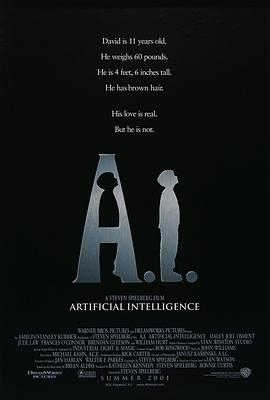

人工智能 / A.I. Artificial Intelligence
又名：AI人工智慧
作品信息
| 导演 | 史蒂文·斯皮尔伯格 |
| 编剧 | 布莱恩·奥尔迪斯 / 伊恩·沃森 / 史蒂文·斯皮尔伯格 |
| 主演 | 海利·乔·奥斯蒙 / 弗兰西丝·奥康纳 / 山姆·洛巴兹 / 杰克·托马斯 / 裘德·洛 / 威廉·赫特 / 梁振邦 / 克拉克·格雷格 / 凯文·苏斯曼 / 汤姆·加洛普 / 尤金·奥斯门特 / 艾普尔·格雷斯 / 马特·温斯顿 / 萨布丽娜·格德维奇 / 西奥·格林利 |
| 类型 | 剧情 / 科幻 |
| 制片国家/地区 | 美国 |
| 语言 | 英语 |
| 上映日期 | 2001-06-29(美国) |
| 片长 | 146分钟 |
| IMDb | tt0212720 |
最后一次看到是 2026-08-01T11:06:51+10:00 · 豆瓣原页